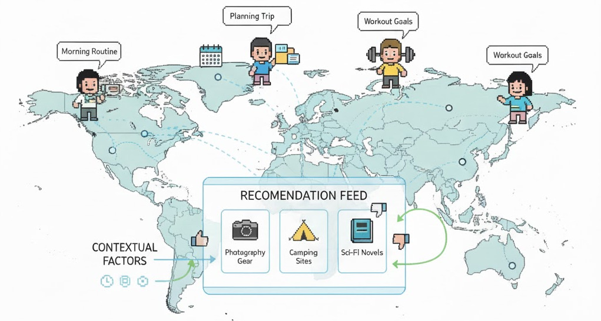

Beyond Offline A/B Testing: Context-Aware Agent Simulation for Recommender System Evaluation
Recommender systems are central to online services, yet evaluation remains challenging due to the disconnect between offline metrics and online performance. We introduce ContextSim, an LLM agent framework that simulates believable user proxies by anchoring interactions in daily life activities. Rather than modeling users in isolation, ContextSim incorporates a life simulation module that generates scenarios specifying when, where, and why users engage with recommendations, grounding agents in realistic temporal, spatial, situational, goal, and constraint contexts. To enforce consistency, agents maintain explicit internal thoughts and their behaviors are aligned at both the action and trajectory levels through item disentanglement and trajectory alignment tasks. Experiments demonstrate that ContextSim generates user interactions more closely resembling authentic human behavior compared to previous approaches. Importantly, recommender system parameters optimized using ContextSim show improved real-world engagement when validated through offline A/B testing correlation analysis.
ContextSim addresses a key limitation of existing LLM-based user simulators: they model users in isolation, ignoring the contextual factors that shape real-world decisions. ContextSim grounds agent behavior in daily life activities, generating realistic scenarios that determine when, where, and why users interact with recommendations. The framework combines life simulation, thought synthesis, and context-aware policy to produce agents whose trajectories closely match real human behavior.

Figure 1: The ContextSim framework for evaluating recommender systems. A life simulation module generates daily schedules with temporal, spatial, and situational contexts. Agents interact with the recommender system while maintaining explicit internal thoughts aligned with their persona and context.
ContextSim operates in three phases to create context-aware user agents:
Infer self-consistent personas from historical data, including age, Big Five personality traits, occupation, habits, and preferences. Agents are equipped with episodic memory (interaction history) and emotional memory (fatigue, satisfaction).
Train agents via two reasoning tasks: item disentanglement (why an action reflects user preferences) and trajectory alignment (why historical actions are preferred over alternatives). Joint SFT on both tasks enables explicit, consistent reasoning.
Generate realistic daily schedules conditioned on persona, weather, and local events. Each interaction is grounded in five context dimensions: temporal (time of day), spatial (location), situational (activity, mood), goal (purpose), and constraint (budget, time).
Agents sense the page, evaluate items, infer internal state (fatigue, curiosity), select actions with explicit thought, and self-reflect to update episodic memory. Context shapes every decision throughout the interaction session.
We evaluate whether agents can identify items aligned with their human counterparts' tastes. ContextSim outperforms all baselines across all datasets:
| Method (1:1) | MovieLens | AmazonBook | Steam | |||
|---|---|---|---|---|---|---|
| Acc | F1 | Acc | F1 | Acc | F1 | |
| RecAgent | 0.581 | 0.621 | 0.604 | 0.659 | 0.627 | 0.650 |
| Agent4Rec | 0.691 | 0.698 | 0.719 | 0.700 | 0.689 | 0.679 |
| SimUSER | 0.791 | 0.777 | 0.822 | 0.790 | 0.791 | 0.794 |
| ContextSim | 0.824 | 0.819 | 0.847 | 0.831 | 0.818 | 0.839 |
ContextSim achieves substantially lower rating prediction error than all baselines, demonstrating better understanding of user preferences:
| Method | MovieLens | AmazonBook | Steam | |||
|---|---|---|---|---|---|---|
| RMSE | MAE | RMSE | MAE | RMSE | MAE | |
| RecAgent | 1.102 | 0.763 | 1.259 | 1.119 | 1.077 | 0.960 |
| Agent4Rec | 0.761 | 0.714 | 0.879 | 0.671 | 0.758 | 0.688 |
| SimUSER | 0.502 | 0.446 | 0.568 | 0.421 | 0.587 | 0.532 |
| ContextSim | 0.451 | 0.392 | 0.511 | 0.369 | 0.528 | 0.471 |
We evaluate persona-action consistency using GPT-4o. ContextSim achieves dramatically higher consistency than baselines:
| Method | Coherent (%) | Partially (%) | Contradictory (%) |
|---|---|---|---|
| RecAgent | 17.3 | 40.9 | 41.8 |
| Agent4Rec | 21.8 | 43.6 | 34.6 |
| SimUSER | 29.2 | 41.0 | 29.8 |
| ContextSim | 84.1 | 10.6 | 5.3 |
GPT-4o assessed whether agent interactions appear human or AI-generated using a 5-point Likert scale:
| Method | MovieLens | AmazonBook | Steam | OPeRA |
|---|---|---|---|---|
| RecAgent | 3.01 | 3.14 | 2.96 | 3.08 |
| Agent4Rec | 3.04 | 3.21 | 3.09 | 3.15 |
| SimUSER | 4.41 | 3.99 | 4.02 | 4.13 |
| ContextSim | 4.60 | 4.18 | 4.22 | 4.37 |
We validate ContextSim by optimizing recommender system parameters and measuring real-world engagement on a food recommendation platform:
| Strategy | Viewing Ratio | Liked Items | Prop. Likes | Satisfaction |
|---|---|---|---|---|
| Baseline | 0.521 | 3.14 | 0.398 | 3.82 |
| Traditional (nDCG) | 0.535 | 3.22 | 0.407 | 3.86 |
| SimUSER-optimized | 0.561 | 3.58 | 0.434 | 4.09 |
| ContextSim-optimized | 0.589 | 3.91 | 0.462 | 4.24 |
ContextSim is evaluated on four diverse recommendation domains: